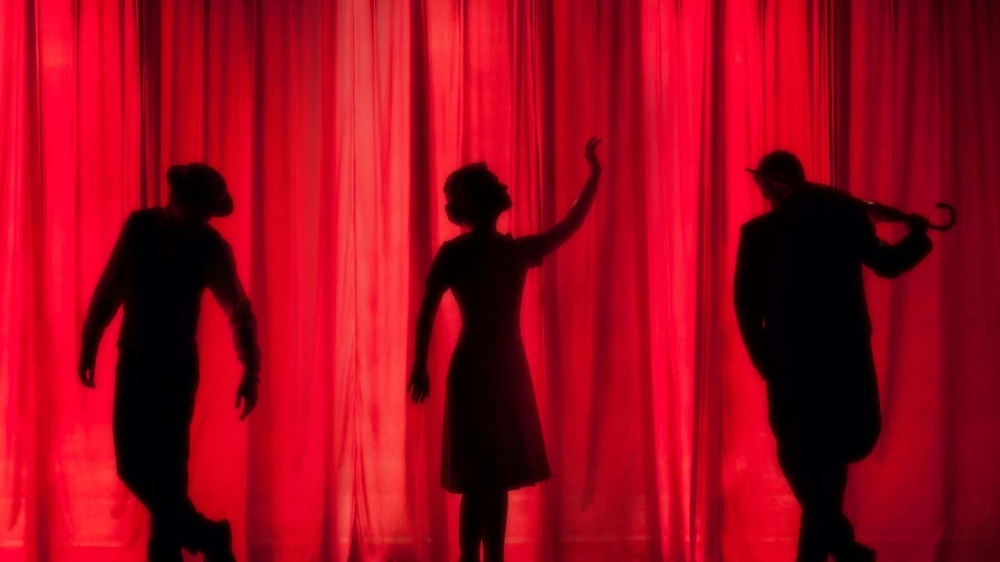
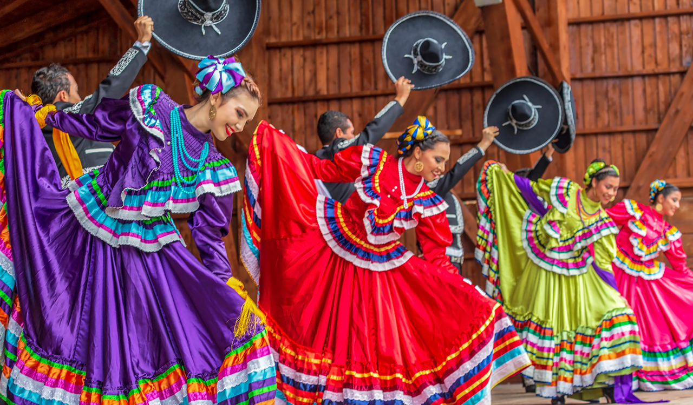

Nuestro plantel cuenta con diferentes tipos de PARAESCOLARES enfocadas en el desarrollo personal, cultural, fisico, de talento e interes de cada alumno de este colegio, en este apartado encontraras informacion acerca de cada uno de estos.
En este paraescolar, los alumnos, durante un horario determinado practican sus destrzas en este deporte, ultilizan balones y mareriales brindados por el plantel y ceuntan con su propio espacio, es decir, la cancha donde pasto se realizan los entrenamientos correspondientes y que cuenta con un espacio amplio, seguro y agradable para desenvolverse
El baloncesto, basquetbol o básquetbol (del inglés basketball; de basket, 'canasta', y ball, 'pelota'), o simplemente básquet, es un deporte de equipo que se puede desarrollar tanto en pista cubierta como en descubierta, en el que dos conjuntos de cinco jugadores cada uno, intentan anotar puntos

El teatro es la rama de las artes escénicas relacionada con la actuación. Representa historias actuadas frente a los espectadores o frente a una cámara usando una combinación de discurso, gestos, escenografía, música, sonido y espectáculo.

La danza o el baile es un arte donde se utiliza el movimiento del cuerpo, normalmente con música, como una forma de expresión y de interacción social con fines de entretenimiento y artísticos.

Una banda de música militar es una agrupación musical encargada de la ejecución de marchas militares para acompañar eventos militares tales como desfiles, ceremonias oficiales, etc. Cada banda es encabezada por un director musical y tiene un elevado número de músicos profesionales
La música (del griego: μουσική [τέχνη] - mousikē [téchnē], «el arte de las musas») es, según la definición tradicional del término, el arte de organizar sensible y lógicamente una combinación coherente de sonidos y silencios respetando los principios fundamentales de la melodía, la armonía y el ritmo

La pintura es el arte de la representación gráfica utilizando pigmentos mezclados con otras sustancias aglutinantes, orgánicas o sintéticas. En este arte se emplean técnicas de pintura, conocimientos de teoría del color y de composición pictórica, y el dibujo.
El voleibol, vóleibol, volibol, vólibol, balonvolea o simplemente vóley es un deporte que se juega con una pelota y en el que dos equipos, integrados por seis jugadores cada uno, se enfrentan sobre un área de juego separada por una red central